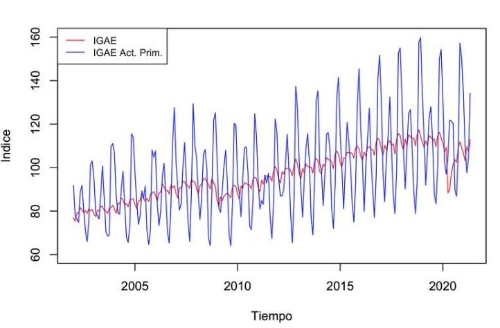

Notas de Clase: Series de Tiempo
2023-08-17
Análisis de Series de Tiempo
Notas de Clase
Otoño 2023
by Benjamín Oliva, Omar Alfaro Rivera & Emiliano Pérez Caullieres

Contexto del documento
Estas son notas de clase de la materia de Análisis de Series de Tiempo en la Facultad de Economía de la Universidad Nacional Autónoma de México.
Este es un trabajo siempre en proceso de mejora, para cualquier comentario o aclaración, contactar al correo benjov@ciencias.unam.mx o omarxalpha@gmail.com.